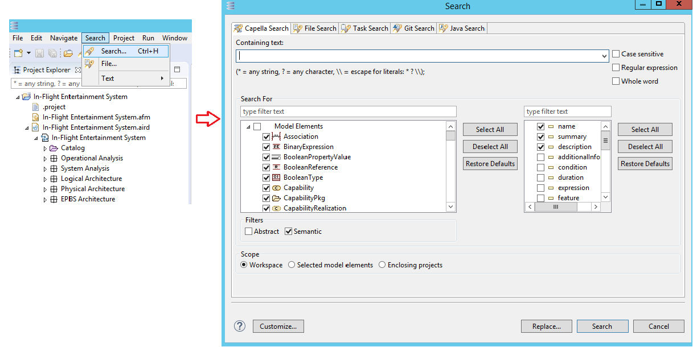
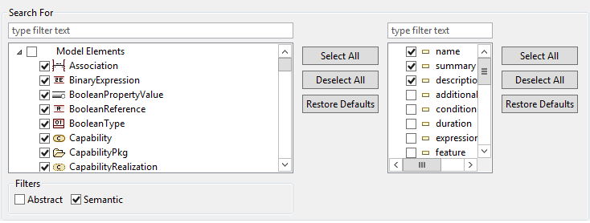
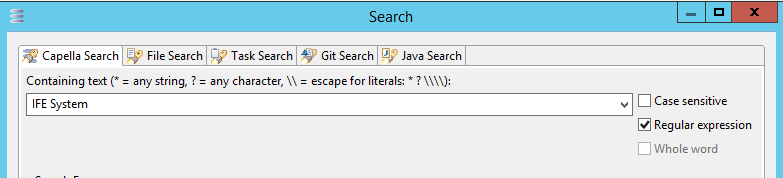
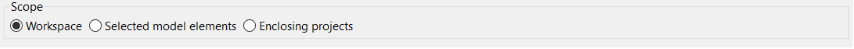
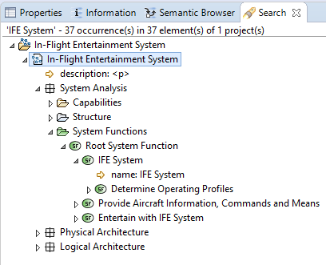
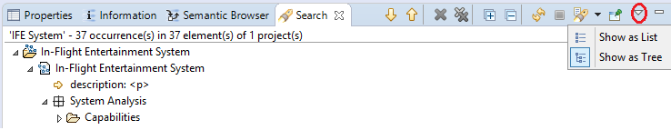
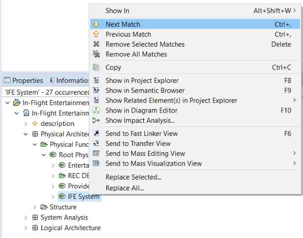
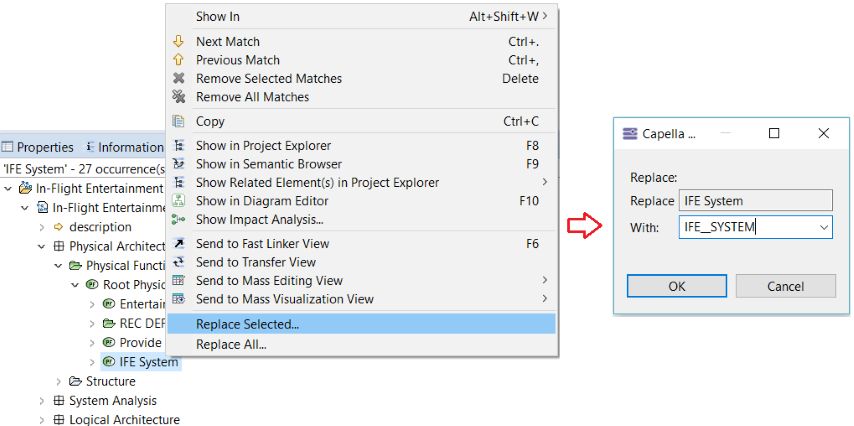

Capella provides Search & Replace functionalities on model elements that follow the Eclipse Search & Replace convention. Several options are provided to enable fine grained Search & Replace on Capella models.
To open the Search & Replace window dialog, go to the Search toolbar (Ctrl + H).

Fig. Search & Replace toolbar menu.
Model element scope can be customized in the Search For section which allows us to specify the granularity of content to search for:
On the left side of the Search For section, the meta-classes can be selected, the right panel will be updated with the union of the attributes of the selected meta-classes. We have the option to apply the default search for granularity by pressing the Restore Defaults buttons.

Fig. Model element search for scope options.
The user can type a text which will be used to match model elements according to the search for selection when performing the search. As in Eclipse, the user has several options which can be selected when searching:

Fig. Find pattern options.
Note: selecting “ Wildcards” options disables “ Whole expression” option.
The Capella Search dialog provides a section to define the search scope which only concerns opened sessions:

Fig. Model scope options
From the Capella Search dialog we have the option to fill a text pattern and then perform:
When performing a search in Capella, the matching model elements according to the selected criteria in the search dialog will be found. The result will be displayed in separate view as below, following the Eclipse Search & Result conventions.

Fig. Search result window
By default, the Capella search result is displayed as a tree but the user can use the view menu from the right side to choose to display the result as tree or as a list. 
Fig. Search result tree or list mode
In the Capella search result view we will be able to perform operations on the results (text replacement, navigation to the element in Project Explorer, next match, previous match etc).

Fig. Search result operations
We can replace a text pattern from the Capella search result view or from the Capella search dialog. The user has the possibility to replace a text pattern, a single occurrence or replace all the occurrences.

Fig. Model replace text pattern